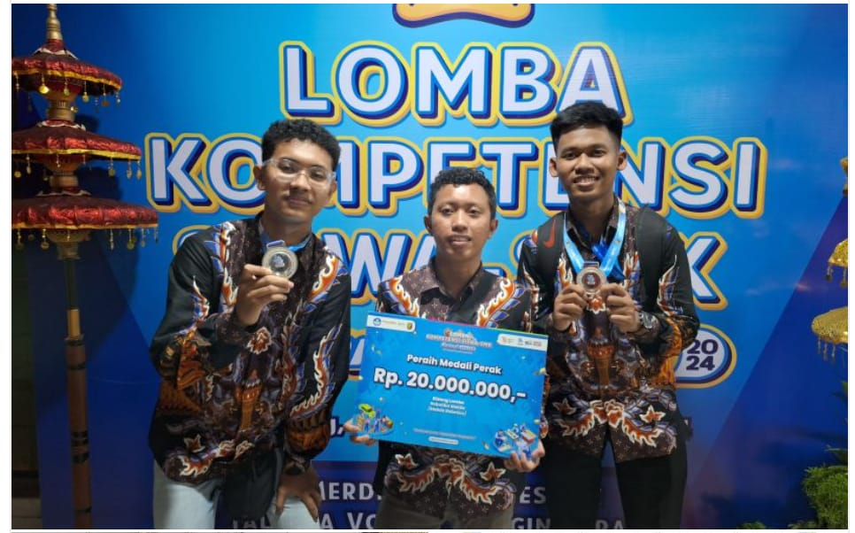

SMK Telkom Malang Meraih Juara 2 di Lomba LKS Bidang Robotika
Pada ajang Lomba Kompetensi Siswa (LKS) tingkat nasional yang berlangsung di Jakarta, tim dari SMK Telkom Malang berhasil meraih Juara 2 di bidang Robotika. Lomba ini diikuti oleh berbagai sekolah kejuruan terbaik di seluruh Indonesia, dan SMK Telkom Malang dengan bangga mengharumkan nama sekolahnya dalam kompetisi bergengsi tersebut.
Tim yang terdiri dari tiga siswa berbakat ini berhasil menciptakan robot yang mampu menyelesaikan tantangan dengan akurasi dan kecepatan tinggi. Mereka mengerjakan proyek robotika tersebut selama berbulan-bulan, menggabungkan teknologi terkini seperti kecerdasan buatan dan sensor otomatis.
"Kami sangat bangga dengan pencapaian ini. Ini adalah hasil dari kerja keras dan dukungan seluruh guru dan teman-teman di SMK Telkom Malang," ujar salah satu anggota tim.
LKS adalah ajang tahunan yang mempertemukan siswa-siswa berbakat dari berbagai sekolah kejuruan di Indonesia. Tahun ini, bidang robotika menjadi salah satu kategori yang paling kompetitif dengan lebih dari 20 tim bersaing untuk menjadi yang terbaik.
Prestasi ini diharapkan dapat memotivasi lebih banyak siswa untuk mengejar keunggulan di bidang teknologi dan robotika, serta membawa lebih banyak prestasi untuk sekolah di masa depan.